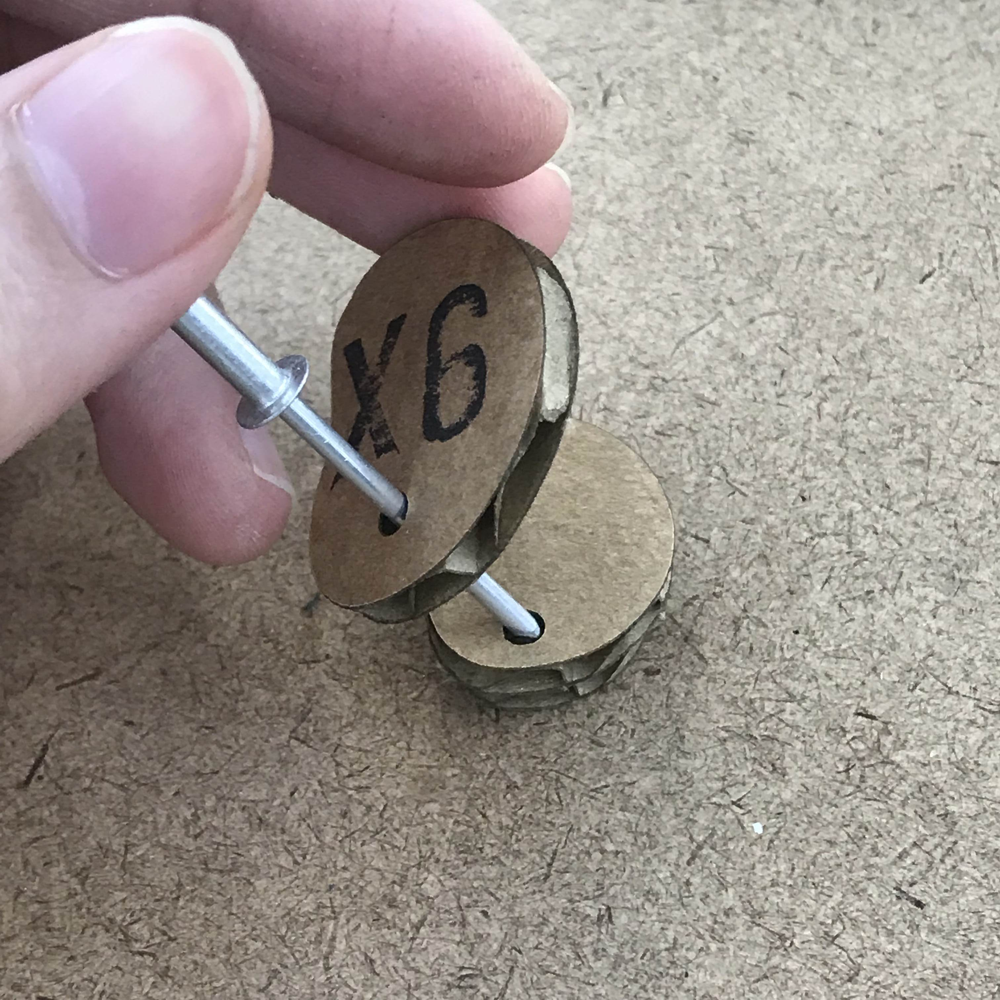

Week 5 - Wooden Jewelery Box / Insense Burner - "Jie" & Another Box
"Jie" - The continuation of "Lei"
For this week's two materials, I always wanted to create a wood version of my lasercut project "Lei", and the other material I chose copper, which is one of the material that I always wanted to try, so the design and materials was decided very fast.However, I do sort of redesigned it based on the new materials. Instead of a small drawer that you can remove the tray, I just made the copper stay loose and have a solid wooden base.

While I am waiting for amazon to deliver my copper sheet, I started with the wooden base. I went to get some of my own wood, but I found better ones at ITP:

Two will be made into jigs that I will be using to shape the copper sheet and one I started shaping it into my design:


And my jigs:

Then I started to shape the bottom part of the base. There isn't any way I could think of to make this organic shape expect drilling it in a "stair" way and than sand it down.

Then, I sand it more to make it look polished:


And finally, the copper sheet arrived, HOWEVER, it was too thick that I cannot cut it properly nor shape it with a hammer:

So I ran to Bruno's Bruno's... but they only carry the very thin one that could be easily reshaped so was also hard to shape it. If copper can not be a tray, then a design with wood cannot be an insense burner. So I decided to make it a muliti usage item: You can remove parts and have different functionality:

Where's my dollar piano box
For this week's Pcomp project, I made a box that's suitable for the project, it is, a 'Coin' Piano Box:


The video:
Week 5 - Japanese Brass Work
For this week's assignment, I want to revisit my previous project, the lasercut project--Lei, and redesign is with a wooden bas and brass details (the cutouts, ash tray and vase tube.)
My father used to collaborate with a brass maker and had designed a brass cup (which he made a huge mistake for not adding a handle to it... it conduct heat too well!) so I learned a little (with my eyes) about how brass works were formed. So I already foresee myself holding a hammer and being the annoying neighbor... But I have to share this video, this is too beautiful. It is saying how the brass makers are more in love with the time they spent with the work more than the finished work. I feel them so much when I was watching this video...
Week 4 - Enclosure
For this week's project, I wanted to actually make a box that works for what we learn in the pcomp class, which is, the tone output!
When I'm ready heading towards The Container Store, my boxes at home be like "Mom, you don't need more..."


So I decided to work with them.
I was sick during the week, so I forgot to do the documentaries...
I made three holes on the cover surface for the following parts: the potentiometer, speaker and the LED light. And one on the side for the USB.

The cover parts were first connected to the cover, then connected to the breadboard.


And make it workable


Week 3 - Lasercut incense burner and Vase: Lei (淚)
Lei (淚) means Tears - The essence of ones' emotion.
Inspiration / Design / cardboard / acrylic / Final
Inspiration
My parents are big fans on artists' pottery art works--they have collected these from places they've travelled. Since I grew up under this environment, I'm also attracted to pottery arts. Whenever I mentioned that I like one of the item in their collection, they will give me as a gift, however, there's exceptions.And it is this:
This might looks 'huh?' from this image, beacuse it is now in Taiwan and my mom took this picture (sorry, mom.) But this is such a beautiful piece—the naturally formed shape incorporate with its function—a vase and incense burner! This is the exact thing that I always wanted! And when I tell my parents they're like "..instead! Do you want that (point to a cup)?"
So, why not make myself?
Design
I have been using Illustrator for about 10 yrs already, and when I was in Parsons, I had experience dealing with lasercutter's AI formats.

But different from my previous experience, which is also two to three years ago, I rarely do AI for 3D projects. Being a interaction designer that have been living under the screen for so long, to have a 3D mind is challenging for me.
I came up with a organic shape, and wanting to have it to look like s miniture Chinese garden.
And I have different planing on how each section will be contruct:
Base —— the organic shape, with two small holes on the left, a hole for vase and two organic cut outs.
Ash tray —— different color / material as the base, should be removeable. Thus I will need to make slot that can work like a drawer.
Cut out with a hole —— different color / material as the base. Need a hole that has tolerance for incense or flower.
Thin vase —— different color / material as the base, should be removeable. I added it later on when I was doing the 3D stuff.
from the above rough planing, I decided to design the height of the burner based on how many layers the ash tray will need. so the ash tray itself, need at lease two layers: a wall layer and a bottom layer
and there will be one more layer needed to hold the tray to the base. So including the base, it will be four layers in total.
But just by thinking without having the 3D stuff is a little challenging, so I went to the lasercutter.
Cardboard Drafting
*There was an incident happened due to my mistake in setting the power and speed of the lasercutter, and almost cause a fire. I am very sorry and thankful for the help from the Shop staff, Ben and people that were they at the time.Ok, back to the topic.
I have all my parts ready:

And build it with glue



Need to make sure the holes are aligned.
Next, I need to design the slot tha can fit in my tray, and from Ben's advicing, I designed it in 3D first:

Also, I tested the size and position of the holes:

After the UX testing, I adjust the position and size a little, and I think I like it very much.
The Real Thing - Arcylic
AI File-
Below is how I organized my files and how file that's been sent to the lasercutter looks like:

Materials
-
I bought two color that I have never used before: pearl and holography.


Also, I bought all the best buddies for arcylics:


For the removeable vase, I bought the cylinder arcylics from Canal Plastic and cut it into smaller sizes with saw, and sanded it down with sand paper:

And this is how the final product looks like:


Some details I like about the holography arcylic is that the reflection really reminds me of the pond:

The parts:

Week 2 - Star Fishing (REPEATABILITY)
For this repeatability project, I want to be as zerowaste as possible, so it also means that I want all 5 objects to be useful.
I had two directions:
1. Something for myself
I always wanted a white modern lantern that looked somehow like this:


The materials will probably be rice paper, wire, lighting system (experience from the flashlight assignment) and wood as the base.
However, not only it is time consuming, but also do I really need 5 of them?
So I went into the second direction:
1. Something for my friend's kid
One of my college friend, Nina having this baby, called Arya, has the same birthday as I do. (Not to mention it because it's my birthday, but) It's less than a month to her birthday! I want to make something for this special baby. So I get some inspirations on web and had some sketches:
From here I figured among all, there's one game that all 5 objects can be used, and that is: The Fishing Game!
I am always amazed by the univers and stars, so instead of fishing fish, I want to create a star fishing game! Also reminded me the DreamWorks Logo:

So here is how I make it--
STEP 1 - Construction of the Star Shape
Inspired by Ben's story on the wooden houses, I want to also create a system that can help me to get a star shape easily. So I was thinking to do this triangle system:
However, when I was really trying to buy the woods, I figured that 5 is still a fairly low quantaty. If I am really going to do the triangle system, it is actually more cutting that 5 individually cutted stars. So I go for the stupid but simplier way: trace and cut.

STEP 2 - Cutting the Shape
It was not the first time that I had ever done something in the woodshop, but it was the first time in five years. The first star definitly sacrificed due to my out-of-practice hands. And here is my 5 stars before sanding:
The Star No.1 is really the one that's more off from the trace mark than the others, however, I found out is that my No. 5 isn't in the best, instead, No. 4 seems to be the best in shape. I think I also figured something interesting about myself: I get tired when it comes to the last one.
Same for sanding:
STEP 3 - Sanding

STEP 4 - Drilling
Now I have to apply magnet onto my stars. I found this package that came in 5 different sizes (mm) of magnets:
Before drilling it onto my precious stars (lordofthering-myprecious.gif) I tried the 3 different sizes of the drill bits, which have the closest sizes compare to my magnets, onto the scrap wood:
But because the sizes of the magnets that I got were in mm instead of inches, some fit well but some are slightly awkward:

Since the force of the magnets are pretty strong, I don't want the baby to get hurt by it, I chose the smallest one in the package (6*3mm), which fit perfectly in a 1/4inch hole. It was a little difficult to defined the depth of the hole.
(img-of-drilled-holes-on-stars.jpg)
STEP 5 - Gluing the Magnets
I was thinking to use super glue for this--it applys fast, strong, and most importantly, it is very thin. However, after my first star and my hand were covered in super glue and the magnet still live on its own, I took out my hot glue gun. The hot glue gun worked for wood and magnet, however, it is very thick, which my drill wasn't prepared for this, that the glue was kind of flooding over the star, yet,the magnet is still not entirly in the hole:


I also made a smaller version of the star:


The Fishing Rod
The head of the fishing rod are done by two drills:A. a thin hole where the string goes through
B. a wider hole for the magnet
I tried two different sizes of magnets:
1. the smallest magnet so that it is the safest on such a small piece
2. the largest magnet that can fit into the radius of this wood.


Week 1 - Flashlight
Documentation